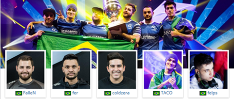

SK Gaming (SK) é uma organização profissional de esportes eletrônicos alemã fundada em 1997 por um grande grupo de jogadores de Quake que moravam em Oberhausen. SK Gaming possui times em diferentes gêneros de jogos e são particularmente reconhecidos pelo seu sucesso em torneios de Counter-Strike.
Faze Clan é uma organização profissional de esportes eletrônicos americana e que possui times que competem no Call of Duty, Counter-Strike: Global Offensive, e Overwatch.
Astralis é um time profissional de Counter-Strike: Global Offensive, fundado em janeiro 2016 por ex-membros da Team SoloMid, depois que eles deixaram a equipe e ficaram entre dezembro de 2015 e janeiro de 2016 conhecidos como Team QuestionMark (?/TQM). Foram os primeiros jogadores a criar sua própria organização. Eles receberam um investimento de milhões de coroas dinamarquesas de Sunstone Capital e do empreendedor dinamarquês Tommy Ahlers, e estão incorporados como Astralis ApS.
G2 Esports é um time espanhol profissional de Counter-Strike: Global Offensive, fundado em novembro de 2013 por Carlos "ocelote" Rodriguez. A organização possui times no League of Legends, Hearthstone, Rocket League, Call of Duty.
North é um time dinamarquês profissional de Counter-Strike: Global Offensive, que possui afiliação com o F.C. Copenhagen.